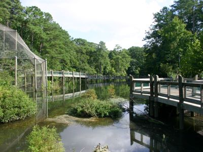

.jpg){kind=link}
An independent city known for its maritime heritage, shipbuilding industry, historic sites, museums, waterfront parks, and diverse outdoor recreation opportunities.
How to Get There
From Hampton (10 mi): Follow I-64 west or US-60 west across the Hampton Roads Peninsula and continue into Newport News, where major attractions, parks, and historic sites are located throughout the city.
Overview
Newport News is a city on the Virginia Peninsula in the Hampton Roads region, along the James River, and it is known as the home of Newport News Shipbuilding, which builds aircraft carriers and submarines for the U.S. Navy, and of the Mariners' Museum and Park, a major maritime museum. It is also the site of the Battle of Hampton Roads in 1862, when the ironclads USS Monitor and CSS Virginia fought, and it is the starting point for exploring the Historic Triangle, with Williamsburg, Jamestown, and Yorktown close by.
Visitors come to Newport News for the Mariners' Museum, with its USS Monitor Center, for the Virginia Air & Space Science Center, and for the Virginia Living Museum. They also come for the Army Transportation Museum, for Fort Eustis, for the riverfront parks, and for the nearby beaches and historic sites.
History
The area was part of the first English settlement in 1607, and the name "Newport News" is said to come from Captain Christopher Newport, who delivered news and supplies to Jamestown in 1607-08. The city grew in the 1880s when railroad magnate Collis P. Huntington built a railroad terminus and a shipyard here, which became Newport News Shipbuilding, now Newport News Shipbuilding, a division of Huntington Ingalls. The Battle of Hampton Roads in March 1862 was the first battle between ironclad warships, and the city's waters were also the site of Civil War naval and army camps. In the twentieth century, the shipyard built many of the Navy's aircraft carriers, and the city became a major center for defense industries.
Sightseeing and Popular Landmarks
The Mariners' Museum and Park has the USS Monitor Center, with the actual turret of the ironclad and a collection of ship models and maritime artifacts. The Virginia Air & Space Science Center in nearby Hampton has aircraft and space artifacts, and the Air Power Park has outdoor displays. Historic Endview is a plantation house used as a Confederate hospital, and the U.S. Army Transportation Museum at Fort Eustis has vehicles and aircraft.
Culture and Museums
The Mariners' Museum is one of the largest maritime history museums in North America and a Smithsonian affiliate, and its USS Monitor Center is the home of the Monitor's turret. The Virginia Living Museum is a combined zoo, aquarium, and science museum with native wildlife, and the Peninsula Fine Arts Center shows local artists. The Virginia War Museum covers military history, and the Ferguson Center for the Arts at Christopher Newport University hosts performances.
Parks
The Mariners' Museum Park has a five-mile trail around Lake Maury, and Newport News Park is one of the largest municipal parks in the country, with trails, lakes, and camping. Huntington Park has a beach and fishing pier on the James River, and the Noland Trail winds through woodlands. The Virginia Living Museum has outdoor trails with native animals, and the beaches of Virginia Beach are about an hour away.
Seasons and Weather
Newport News has a humid subtropical climate. Summers are hot and humid, with highs in the upper 80s°F, and winters are mild, with highs in the 50s°F and about 6 inches of snow. Spring and fall are the most pleasant seasons, and hurricane season runs from June to November.
This article uses material from Wikipedia as well as information from official tourism and institutional sources. Key references include Newport News Tourism, The Mariners' Museum and Park, Virginia Living Museum, Virginia Air & Space Science Center, Virginia Tourism, and National Weather Service Wakefield. Wikipedia material is from the articles "Newport News, Virginia" and "Battle of Hampton Roads", and is available under the Creative Commons Attribution-Share-Alike License 3.0.
Featured Locations
American Civil War Museum, CC BY-SA 4.0, via Wikimedia Commons; Image Size Adjusted

Air Power Park
Outdoor aviation and space museum featuring vintage aircraft, rockets, and interactive exhibits celebrating mid-20th-century aerospace innovation.
American Civil War Museum, CC BY-SA 4.0, via Wikimedia Commons; Image Size Adjusted
Army Transportation Museum
Extensive indoor and outdoor exhibits chronicle the evolution of U.S. Army transportation from the Revolutionary War to modern times through vehicles, dioramas, and artifacts.
American Civil War Museum, CC BY-SA 4.0, via Wikimedia Commons; Image Size Adjusted
Historic Endview
Restored 18th-century home and grounds offering guided tours, Civil War history, and seasonal events that explore early American life and medicine.

American Civil War Museum, CC BY-SA 4.0, via Wikimedia Commons; Image Size Adjusted
Mariners' Museum and Park
Expansive maritime museum and park offering exhibits on naval history, shipwrecks, and ocean exploration alongside scenic trails and a large lake.
American Civil War Museum, CC BY-SA 4.0, via Wikimedia Commons; Image Size Adjusted
Virginia Air & Space Science Center
Interactive science and aviation center featuring hands-on exhibits, historic aircraft, and immersive space exploration experiences.

American Civil War Museum, CC BY-SA 4.0, via Wikimedia Commons; Image Size Adjusted
Virginia Living Museum
Interactive exhibits and live animal habitats showcase native wildlife, plants, and ecosystems through immersive educational experiences.
 Fletcher6, CC BY-SA 3.0, via Wikimedia Commons ; Image Size Adjusted
Fletcher6, CC BY-SA 3.0, via Wikimedia Commons ; Image Size Adjusted


_(8426448355)-1000.jpg) National Park Service, CC BY-SA 2.0, via Wikimedia Commons ; Image Size Adjusted
National Park Service, CC BY-SA 2.0, via Wikimedia Commons ; Image Size Adjusted_(8426448355).jpg){kind=link}